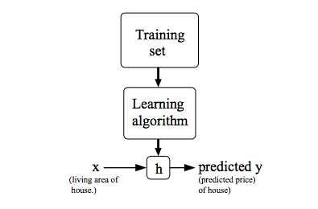
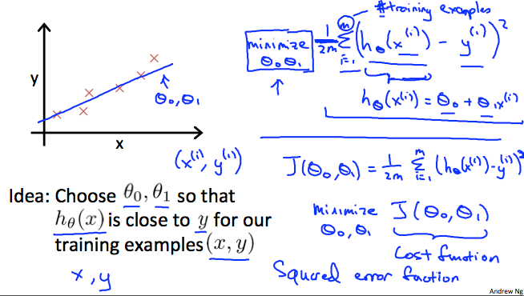
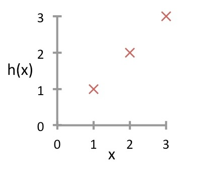
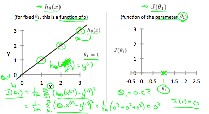
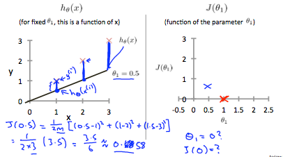
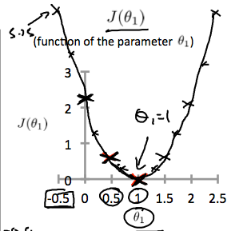

Linear Regression
Notation:
m = Number of training
examples
x′s = "input" variable
/ features
y′s = "output"
variable / "target" variable
(x,y) = one training
example
(xi
,yi
) = x and y at the i'th row in the table
xi
is our input variable and yi
is our output.
m is called a training set.
To describe the supervised learning problem slightly more formally, our goal is,
given a training set, to learn a function h : X → Y so that h(x) is a “good”
predictor for the corresponding value of y. For historical reasons, this function h
is called a hypothesis.
Hypothesis: hθ(x)=θ0+θ1x

When the target variable that we’re trying to predict is continuous, such as in our
housing example, we call the learning problem a regression problem. When y can take
on only a small number of discrete values (such as if, given the living area, we
wanted to predict if a dwelling is a house or an apartment, say), we call it a
classification problem.
Example Training set:
| size in feet2
(x) |
Price ($) in 1000's (y) |
| 2104 |
460 |
| 1416 |
232 |
| 1534 |
315 |
| 852 |
178 |
| ... |
... |
The Cost Function
Hypothesis: hθ(x)=θ0+θ1x
Idea: Choose θ0
, θ1
so thay hθ(x) is close to y for our
training examples (x,y)
We can measure the accuracy of our hypothesis function by using a cost function.
This takes an average difference (actually a fancier version of an average) of all the
results of the hypothesis with inputs from x's and the actual output y's.
Minimize θ0θ1
Remember that m is the number of training
examples.
Hypothesis:
hθ(xi)=θ0+θ1xi
Cost function (Squared error function or Mean squared error):
J(θ0,θ1)=2m1∗i=1∑m(hθ(xi)−yi)2
To break it apart, it is 21xˉ
where xˉ
is the mean of the
squares of hθ(xi)−yi
, or the difference between the predicted value
and the actual value.
This function is otherwise called the "Squared error function", or "Mean squared
error". The mean is halved (21) as a
convenience for the
computation of the gradient descent, as the derivative term of the square function will
cancel out the 21 term. The
following image summarizes what the cost
function does:

Cost function intuition
Recap:
Hypothesis: hθ(x)=θ0+θ1x
Parameters: θ0,θ1
Cost Function: J(θ0,θ1)=2m1∗∑i=1m(hθ(xi)−yi)2
Goal: minimize
θ0,θ1J(θ0,θ1)
Simplified:
Hypothesis: hθ(x)=θ1x
Parameters: θ1
Cost function: J(θ1)=2m1∗∑i=1m(hθ(xi)−yi)2
Goal: minimize
θ1J(θ1)
Example:
Suppose we have a training set with m=3 examples, plotted below. Our hypothesis
representation is hθ(x)=θ1x, with parameter θ1
. The cost function J(θ1) is J(θ1)=2m1∑i=1m(hθ(x(i))−y(i))2
. What is J(0)?

Since θ1=0 then hθ(x)=0x=0
We get:
J(0)=2(3)1[(0−1)2+(0−2)2+(0−3)2]
=61[1+4+9]
=61[14]
=614
If we try to think of it in visual terms, our training data set is scattered on the x-y plane. We are trying to
make a straight line
(defined by hθ(x) which passes through these scattered data
points.
Our objective is to get the best possible line. The best possible
line will be such so that the average squared vertical distances of
the scattered points from the line will be the least. Ideally, the
line should pass through all the points of our training data set. In
such a case, the value of J(θ0,θ1)
will be 0. The following example shows the ideal situation where we
have a cost function of 0.

When θ1=1, we get a slope of 1 which goes through
every
single data point in our model. Conversely, when θ1=0.5, we
see the vertical distance from our fit to the data points increase.

This increases our cost function to 0.58. Plotting several other
points yields to the following graph:

Thus as a goal, we should try to minimize the cost function. In this
case, θ1=1 is our global minimum.
Cost Function Intuition II